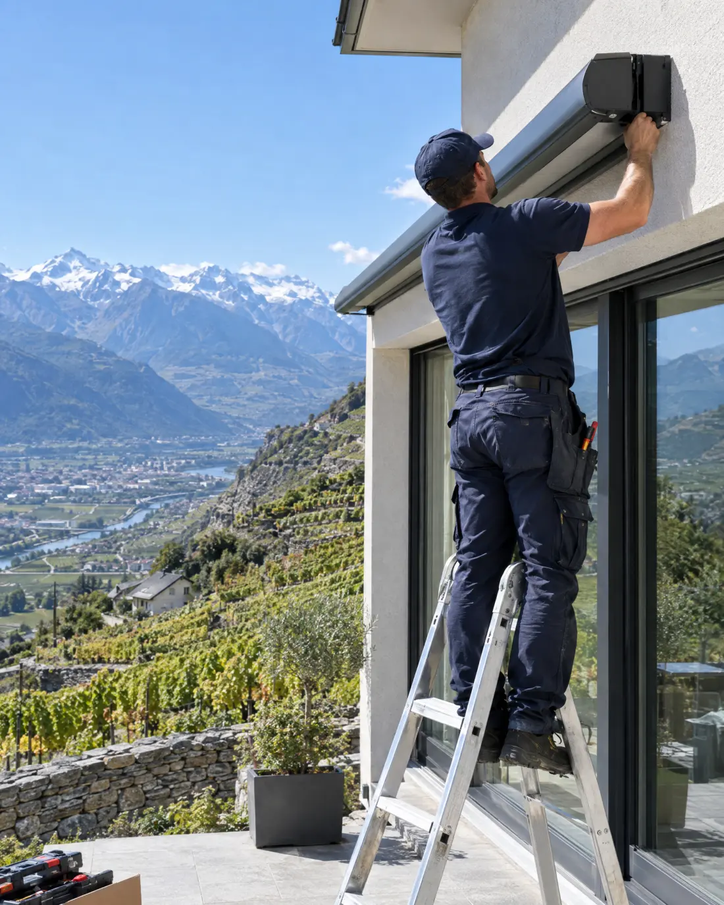

Accueil / L’entreprise
Storistes en Valais depuis 1981.
Une entreprise familiale de quatorze personnes, trois antennes à Sion, Monthey et Nendaz, et des monteurs qui connaissent le foehn, la neige et les façades en madriers.

Quarante-cinq ans de stores entre Rhône et montagnes.
D’un atelier à Sion à trois antennes, sans jamais confier un chantier à un sous-traitant.
- 1981
Un atelier à Sion
Jean-Marc Fournier, storiste, ouvre l’entreprise avec un monteur et une camionnette. Premiers chantiers : les villas de Savièse et les immeubles de la plaine.
- 1994
L’antenne de Monthey
Pour servir le Chablais sans traverser le canton à chaque panne.
- 2006
Nendaz et les stations
Une antenne au cœur des stations : chalets, résidences et hôtels de Nendaz, Veysonnaz et Verbier.
- 2012
La domotique
Premières installations Somfy et KNX : les stores qui remontent seuls au premier coup de foehn.
- 2019
Les occasions
Les stores repris en bon état sont révisés à l’atelier et revendus, plutôt que jetés.
- 2026
La deuxième génération
Stéphane Fournier reprend la direction. Plus de 3 000 réalisations, et toujours le même numéro à Sion.
Pour les architectes et les collectivités.
Plus de 200 bureaux d’architectes nous ont confié leurs façades, des villas aux bâtiments publics.
Soumissions
Offres sur descriptif CFC 228, variantes chiffrées et fiches techniques pour vos dossiers.
Bâtiments publics
Écoles, administrations communales et bâtiments de l’État : pose, maintenance et réparations planifiées.
Hôtellerie et restauration
Terrasses, pergolas étanches et parasols posés hors saison, dépannage prioritaire pendant la saison.
Régies et PPE
Réparations groupées par immeuble et devis clairs pour les assemblées de copropriétaires.
Ceux qui viendront chez vous.
- Stéphane FournierDirecteur, technicien en protection solaire
- Nathalie BonvinSecrétariat, devis et planning
- Yves MabillardConseil technique, architectes et communes
- Kevin CarronChef monteur, pergolas et grandes baies
- Mélanie TheytazService après-vente, antenne de Monthey
- Et neuf autresMonteurs, techniciens et apprentis storistes
Ce que disent nos clients.
4,9 sur Google, 132 avis.
« Store banne de cinq mètres remplacé en une matinée, toile superbe et chantier impeccable. Le devis a été respecté au franc près. »
« Le foehn avait arraché notre toile un vendredi soir : sécurisé le samedi matin, réparé le mardi. »
« Ils ont pris le temps de comparer screen et stores à lamelles pour notre chalet, sans pousser au plus cher. »